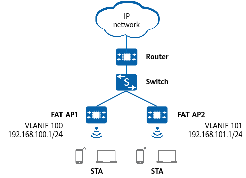

There are multiple APs on an enterprise network. The customer requires that APs automatically adjust their channels to minimize interference and ensure optimal WLAN performance.

Table 1 and Table 2 provide examples of data planning.
Item |
Data |
|---|---|
Service VLAN for STAs |
VLAN 100 |
DHCP server |
The Fat AP functions as a DHCP server to assign IP addresses to STAs. |
IP address pool for STAs |
VLANIF 100: 192.168.100.2–192.168.100.254/24 |
AP management information |
|
Regulatory domain profile |
|
SSID profile |
|
Security profile |
|
VAP profile |
|
Air scan profile |
|
2.4 GHz radio profile |
|
5 GHz radio profile |
|
Item |
Data |
|---|---|
Service VLAN for STAs |
VLAN 101 |
DHCP server |
The Fat AP functions as a DHCP server to assign IP addresses to STAs. |
IP address pool for STAs |
VLANIF 101: 192.168.101.2–192.168.101.254/24 |
AP management information |
|
Regulatory domain profile |
|
SSID profile |
|
Security profile |
|
VAP profile |
|
Air scan profile |
|
2.4 GHz radio profile |
|
5 GHz radio profile |
|
Radio calibration is not applicable to scenarios where APs cannot detect each other, for example, APs use directional antennas, are far from each other, or have obstacles between them.
Radio calibration is not applicable to high-density, rail transportation, or outdoor coverage (directional antennas) scenarios.
If a radio works in monitoring mode, it does not participate in calibration.
<HUAWEI> system-view [HUAWEI] sysname FAT AP1 [FAT AP1] wlan [FAT AP1-wlan] ap-id 0 [FAT AP1-wlan-ap-0] radio 0 [FAT AP1-wlan-ap-0-radio-0] calibrate auto-channel-select enable [FAT AP1-wlan-ap-0-radio-0] calibrate auto-txpower-select enable [FAT AP1-wlan-ap-0-radio-0] quit [FAT AP1-wlan-ap-0] radio 1 [FAT AP1-wlan-ap-0-radio-1] calibrate auto-channel-select enable [FAT AP1-wlan-ap-0-radio-1] calibrate auto-txpower-select enable [FAT AP1-wlan-ap-0-radio-1] quit [FAT AP1-wlan-ap-0] quit
# Create the air scan profile wlan-airscan and configure the scan channel set, scan interval, and scan duration. By default, an air scan channel set contains all channels supported by the country code of an AP.
[FAT AP1-wlan] air-scan-profile name wlan-airscan [FAT AP1-wlan-air-scan-prof-wlan-airscan] scan-channel-set country-channel [FAT AP1-wlan-air-scan-prof-wlan-airscan] scan-period 80 Warning: Modifying the scan parameters may affect services. [FAT AP1-wlan-air-scan-prof-wlan-airscan] scan-interval 10000 [FAT AP1-wlan-air-scan-prof-wlan-airscan] quit
# Create the 2.4 GHz radio profile wlan-radio2g and bind the air scan profile wlan-airscan to the 2.4 GHz radio profile.
[FAT AP1-wlan] radio-2g-profile name wlan-radio2g [FAT AP1-wlan-radio-2g-prof-wlan-radio2g] air-scan-profile wlan-airscan [FAT AP1-wlan-radio-2g-prof-wlan-radio2g] quit
# Create the 5 GHz radio profile wlan-radio5g and bind the air scan profile wlan-airscan to the 5 GHz radio profile.
[FAT AP1-wlan] radio-5g-profile name wlan-radio5g [FAT AP1-wlan-radio-5g-prof-wlan-radio5g] air-scan-profile wlan-airscan [FAT AP1-wlan-radio-5g-prof-wlan-radio5g] quit
# Bind the 2.4 GHz profile wlan-radio2g and the 5 GHz profile wlan-radio5g to the AP with the ID 0.
[FAT AP1-wlan] ap-id 0 [FAT AP1-wlan-ap-0] radio-2g-profile wlan-radio2g radio 0 Warning: This action may cause service interruption. Continue? [Y/N]:y [FAT AP1-wlan-ap-0] radio-5g-profile wlan-radio5g radio 1 Warning: This action may cause service interruption. Continue? [Y/N]:y [FAT AP1-wlan-ap-0] quit
# Manually trigger radio calibration.
[FAT AP1-wlan] calibrate manual startup Warning: The operation may cause business interruption, Continue? [Y/N]:y Info: To check the calibration progress, run the display calibrate status command.
[FAT AP1-wlan] display radio all CH/BW:Channel/Bandwidth CE:Current EIRP (dBm) ME:Max EIRP (dBm) CU:Channel utilization CCI/TX/RX/NF:Co-channel interference(%)/Transmit time ratio(%)/Receive time ratio(%)/Noise floor(dBm) ST:Status WM:Working mode (normal/monitor/monitor dual-band-scan/monitor proxy dual-band-scan) CMD:Shut down by a command ERR:Shut down due to an error CAL:Shut down due to radio calibration LPC:Shut down due to insufficient power supply 3GPP:Shut down due to 3GPP restrictions Total:2 ---------------------------------------------------------------------------------------------------------- AP ID Name RfID Band Type ST CH/BW CE/ME STA CU CCI/TX/RX/NF WM ---------------------------------------------------------------------------------------------------------- 0 built_in_ap 0 2.4G 11be on 11/20M 25/25 0 26% 26/0/0/-87 normal 0 built_in_ap 1 5G 11be on 44/40M+ 28/28 0 17% 17/0/0/-95 normal ----------------------------------------------------------------------------------------------------------
# After calibration is completed, it is recommended that the AP be configured to perform scheduled radio calibration in off-peak hours, for example, 03:00 am.
[FAT AP1-wlan] calibrate enable schedule time 03:00:00 Info: This operation may take a few seconds. Please wait for a moment.Done.
# sysname FAT AP1 # wlan air-scan-profile name wlan-airscan scan-period 80 radio-2g-profile name wlan-radio2g air-scan-profile wlan-airscan radio-5g-profile name wlan-radio5g air-scan-profile wlan-airscan ap-id 0 type-id 15 ap-mac 00fc-2255-4400 ap-sn 102428757953 ap-name built_in_ap ap-group built_in_ap radio 0 radio-2g-profile wlan-radio2g vap-profile wlan-net wlan 1 radio 1 radio-5g-profile wlan-radio5g vap-profile wlan-net wlan 1 # return
# sysname FAT AP2 # wlan air-scan-profile name wlan-airscan scan-period 80 radio-2g-profile name wlan-radio2g air-scan-profile wlan-airscan radio-5g-profile name wlan-radio5g air-scan-profile wlan-airscan ap-id 0 type-id 15 ap-mac 00fc-2255-4401 ap-sn 102428757954 ap-name built_in_ap ap-group built_in_ap radio 0 radio-2g-profile wlan-radio2g vap-profile wlan-net wlan 1 radio 1 radio-5g-profile wlan-radio5g vap-profile wlan-net wlan 1 # return